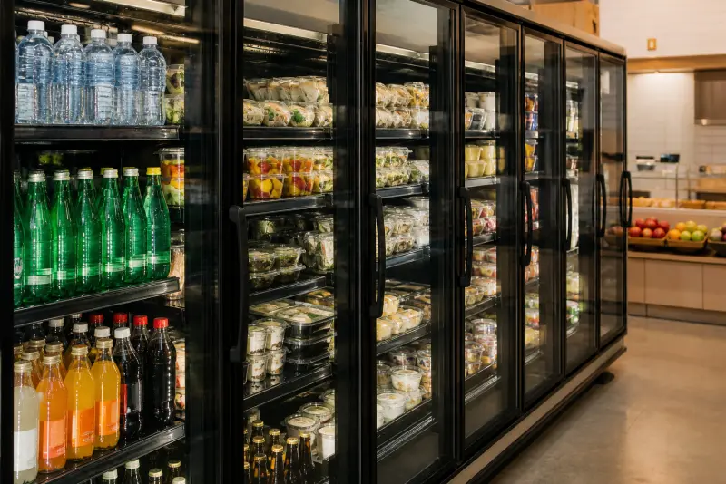

Commercial Refrigeration Engineers North London - 24/7 Emergency
Commercial Fridge Repair North London & London
Prep counters, uprights and under-counter fridges that keep a kitchen legal. Call now for 24/7 commercial fridge repair across North London and a 25 mile radius.
When a commercial fridge fails, service stops
We provide both repair and service / maintenance for commercial fridges in London. A domestic fridge at home is an inconvenience. A commercial fridge in a restaurant, pub, takeaway or supermarket is a stop on the pass. Prep fridges hold mise en place at a legal chill. Upright cabinets hold dairy, meat and desserts. Under-counter units sit under the pass and get opened every minute of service. When any of those cabinets climb above the safe band, you are looking at dumped food, a failed EHO check, or a lunch service you cannot run.
Commercial fridge service London
Fridge service London and refrigeration service London sit on the same visit as refrigeration repair London. We offer Polar fridge service and Williams fridge service on trade cabinets, plus commercial appliances service and catering service London for kitchens that want a service contract rather than waiting for a breakdown. Planned servicing and PPM (planned preventative maintenance) mean we clean condensers, check door seals, probe temperatures and log faults before an EHO visit. Appliances service on a quarterly round costs less than dumped mise. Call if you want the van on a diary, not only on a 24/7 emergency.
Cold Direct is a commercial-only company. North London Commercial Refrigeration Engineers from our team repair Williams, Foster, Polar, Blizzard, Gram, Lec, True and Tefcold fridges on restaurant, pub, bar, shop and hotel sites across North London and London. We do not book house calls. The van is packed for trade cabinets: extra filters, door gaskets, fan motors, controllers and the fasteners that snap on a busy line.
Typical commercial fridge faults we fix every week include a unit that is running but not cold, a prep counter with one door warmer than the others, ice on the evaporator, water on the floor, a noisy condenser, or an alarm that will not clear. Often the cause is a blocked condenser in a tight kitchen, a failed door switch, or a controller that was knocked during a deep clean. We check temperatures with a probe, not a guess, and we write the readings down so your manager has a record.
Restaurants in Islington, Camden and the City cannot wait until “next available weekday”. Pubs in Haringey and Barnet have the same problem on a Friday night. Takeaways in Tottenham, Edmonton and Walthamstow need the under-counter fridge working before the evening rush. Supermarkets and convenience stores need glass-door merchandisers holding advertised temperatures all day. That is why we offer 24/7 emergency commercial fridge repair across a 25 mile radius from North London, covering all London plus the Hertfordshire and Essex towns on that ring.
On arrival we isolate the cabinet if it is unsafe, recover or hold refrigerant only where the job needs it, and quote labour and parts before we start. If the compressor is dead and the cabinet is ten years old, we will say so. If a fan or gasket will get you through the weekend, we will say that too. You decide. We do not start extra work without the duty manager’s say-so.
Call any of the three numbers. Mobile is best after hours. Freephone is useful from a landline on the pass. The London office number is manned for planned jobs and accounts. Tell us the make, the model if you can see the plate, and whether it is a prep, upright or under-counter. We will give you a time.

Commercial fridge brands we repair
Williams, Foster, True, Hoshizaki, Polar, Blizzard, Gram, Lec, Snomaster, Tefcold and most other trade fridge brands. If your commercial fridge is warm, call 07983 759320 for same-day repair across Greater London. London-wide booking also sits on commercial fridge repair London.
Areas covered
North London, Enfield, Barnet, Finchley, Wood Green, Tottenham, Edmonton, Walthamstow, Chingford, Southgate, Palmers Green, Winchmore Hill, Cockfosters, Potters Bar, Borehamwood, Camden, Islington, Hackney, Haringey, City of London, Westminster, Harrow, Watford, St Albans, Cheshunt, Waltham Cross, Harlow, Ilford, Romford, Stratford, All London (25 mile radius North London).
Book commercial fridge repair
24/7 emergency for restaurants, pubs, shops and takeaways.
Commercial Fridge Repair North London - 24/7 Emergency Specialists in London

When a trade fridge fails in a North London kitchen, high-risk food is on a clock. A restaurant pass, takeaway prep line or butcher cabinet that climbs above eight degrees can cost hundreds of pounds an hour in dumped protein and a lost lunch. Cold Direct has 15 years on commercial plant. F-Gas certified engineers book a 2 to 4 hour emergency response across a 25 mile radius from North London. We quote before we recover gas. Call when the alarm sounds, the door will not seal, or the compressor in the base has gone quiet after service.
Why Your Commercial Fridge Stopped Working?
- Extract grease from a tight High Street kitchen mats the condenser behind the kick plate, so head pressure climbs and the cabinet trips while staff still hear the fan.
- A door left on the latch through lunch lets moist air onto the evaporator; ice then grows on the back wall and the thermostat never reaches cut-out.
- Old street supplies cause brief power dips that blank a digital controller; the fans may run while the compressor stays off until we reset and prove plus three with a probe.
Commercial Fridge Types & Brands We Repair in London
Williams, Foster, True, Gram, Polar and Blizzard catering uprights and undercounters are weekly work. On North London sites we see Williams Jade two-door fridges beside the pass and Foster Eco Pro G3 cabinets in hotel prep. Genuine parts from the plate. A cheap generic thermostat is how a cabinet hunts all night and ices the coil.
Emergency Commercial Fridge Repair North London Across London
We aim for 60 to 90 minutes to Camden, Islington, City, Westminster, Barnet and Enfield when the diary is open. Call 07983 759320. Fixed price before we start. Commercial only: we do not take house fridge-freezers as a default. Leave the kick grille clear of mop buckets so the condenser can breathe until we arrive.
Do you cover Wood Green, Tottenham and Enfield the same day?
Yes. Those postcodes sit inside the 25 mile radius. Tell us the plate, whether it is an upright or undercounter, and if the alarm is flashing. We book Commercial Fridge Repair North London on the 24/7 list, including Sundays.
Is a small takeaway undercounter still commercial work?
If it holds high-risk food for sale, yes. Polar and Blizzard undercounters in takeaways are trade plant. A kitchen fridge in a flat is not this diary. Say which you have on the call so we pack the right gaskets.
Will you probe temperatures for an EHO visit?
Yes on commercial jobs. We write air and product readings before we leave. That note is what an inspector wants, not a verbal “it feels colder”. Ask for it if you have a visit booked the next morning.
Related: Commercial Fridge Repair London | Commercial Freezer Repair North London | Foster Fridge Repair London